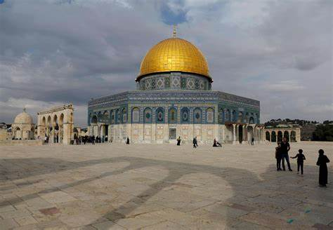

general and Palestinian nationalism in particular, as well as israeli or Zionist nationalism, so talking about its long history, which spans more than 5,000 years, often takes an ideologically biased turn. For example, Israeli nationalists focus on the historical era in which the sons of Israel settled the land of Palestine and claim that all the Jews of the world today come from those people to
Soria is a municipality and a Spanish city, located on the Douro river in the east of the autonomous
community of Castile and León and capital of the province of Soria. Its population is 38,881 (INE, 2017), 43.7% of the provincial population. The municipality has a surface area of 271,77 km , with a density of 144.97 inhabitants/km . Situated at about 1065 metres above sea level, Soria is the second highest provincial capital in Spain.
Libya , officially the State of Libya (Arabic: دولة ليبيا, romanized: Dawlat Lībiyā), is a country in the Maghreb region in North Africa. It is bordered by the Mediterranean Sea to the north, Egypt to the east, Sudan to
southeast, Chad to the south, Niger to the southwest, Algeria to the west, and Tunisia to
Benghazi (lit. Son of [the] Ghazi) is a city in Libya. Located on the Gulf of Sidra in the Mediterranean, Benghazi is a major seaport and the second-most populous city in the country, as well as the largest city in Cyrenaica, with an estimated population
of 632,937 in 2019. A Greek colony named